Ebenen
Ebenen im dreidimensionalen Raum
Eine Ebene im dreidimensionalen Raum ist eine unendlich ausgedehnte, ebene Fläche, deren Lage im Raum eindeutig festgelegt ist.
Zwei Geraden, die sich schneiden, spannen eine Ebene im Raum auf.
Beispiel:
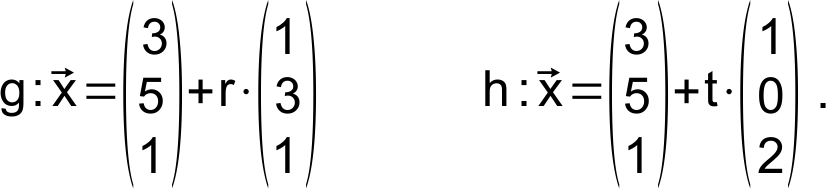
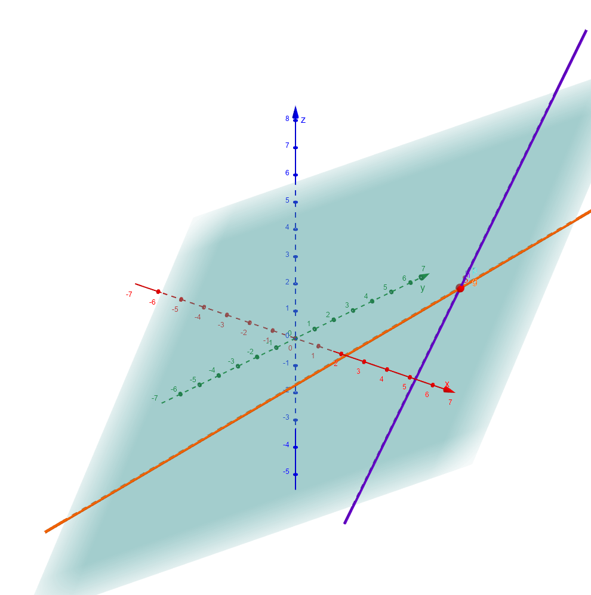
Eine Ebene E, die durch die Geraden g und h festgelegt wird.
Ebenengleichungen in Parameterform
Bei der Definition einer Ebene, geht es im Prinzip darum, die Lage der Punkte, die in der Ebene liegen zu definieren.
Da zwei Geraden eine Ebene aufspannen, liegt es nahe, eine Geradengleichung als Basis für die Definition einer Ebene zu nehmen.
Beispiel:
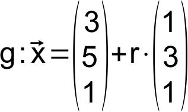
Diese Geradengleichung legt die Lage aller Punkte fest, die auf der Geraden g liegen. Ergänzt man nun die Geradengleichung durch den Richtungsvektor von h, multipliziert mit einem Parameter, so erhält man eine Gleichung, die alle Punkte auf der Ebene definiert.
Ebenengleichung in Parameterform:
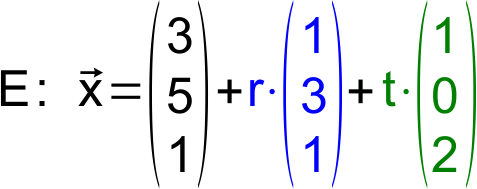
Die Ebenengleichung unterscheidet sich von der Geradengleichung in Parameterform lediglich durch einen zweiten Richtungsvektor.
Der Stützvektor der Ebene ist der Ortsvektor eines beliebigen Punktes der beiden Geraden, die die Ebene aufspannen.
Die "Richtungsvektoren" einer Ebene werden als Spannvektoren bezeichnet. Sie sind Vielfache der Richtungsvektoren der aufspannenden Geraden.
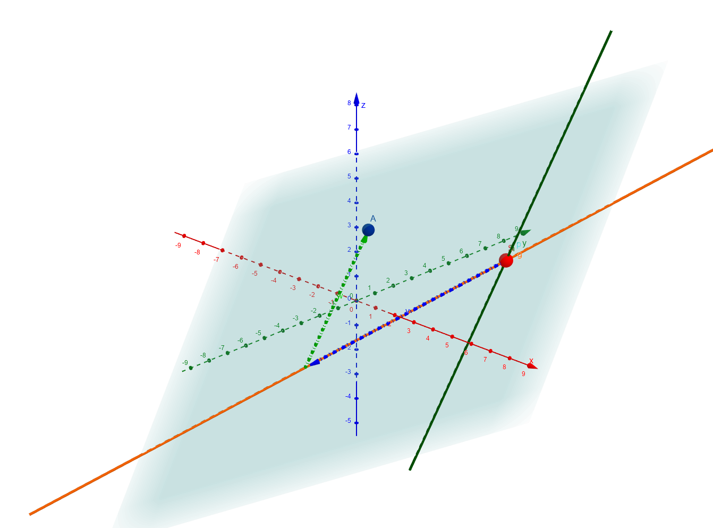
Punkt einer Ebene in Abhängigkeit der beiden Spannvektoren
Lage einer Geraden bezogen zu einer Ebene
Manchmal ist es von Interesse wie eine Gerade bezüglich einer Ebene verläuft. Im dreidimensionalen Raum gibt es dafür drei Möglichkeiten:
- Ebene und Gerade schneiden sich in einem Punkt.
- Ebene und Gerade schneiden sich in unendlich vielen Punkten. ⇔ Die Gerade verläuft in der Ebene.
- Ebene und Gerade schneiden sich nicht. ⇔ Die Gerade verläuft parallel zur Ebene.
Man erhält eine Schnittgleichung, wenn man die Parameterform einer Geraden g mit der Parameterform einer Ebene E gleichsetzt.
Gerade und Ebene schneiden sich
Beispiel:
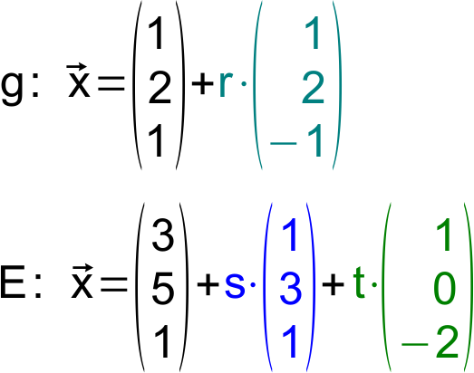
Schnittgleichung bestimmen und umformen:
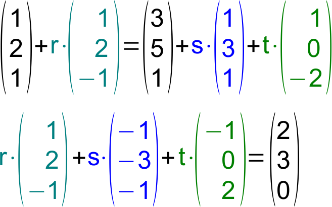
LGS lösen:
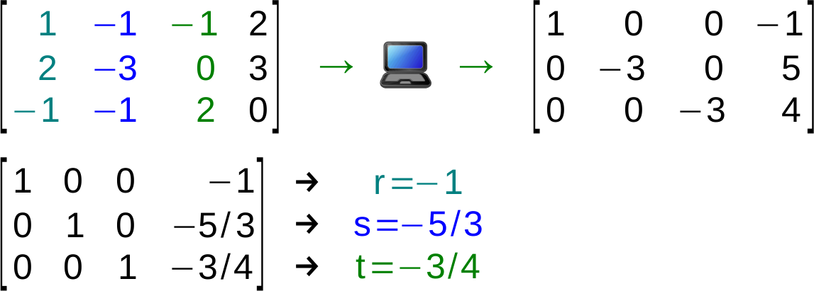
Schnittpunkt berechnen:
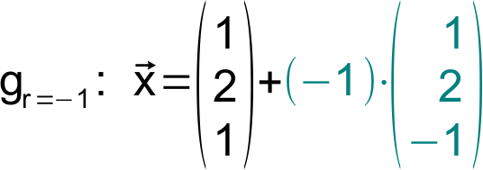
Die Gerade g schneidet die Ebene E im Punkt: S(0|0|2)
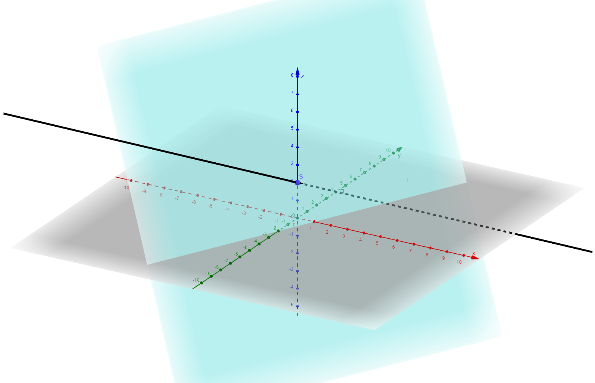
Gerade schneidet eine Ebene in einem Punkt
Die Gerade liegt in der Ebene
Beispiel:
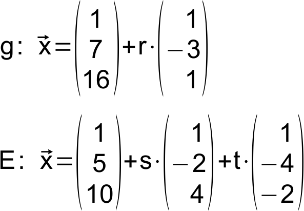
Schnittgleichung bestimmen und umformen:
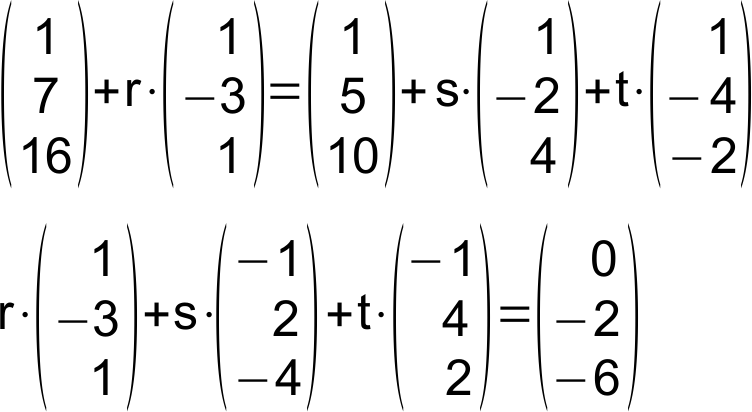
LGS lösen:
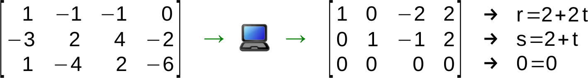
Das LGS hat unendlich viele Lösungen. Das bedeutet, dass jeder Punkt auf der Geraden auch in der Ebene liegt.
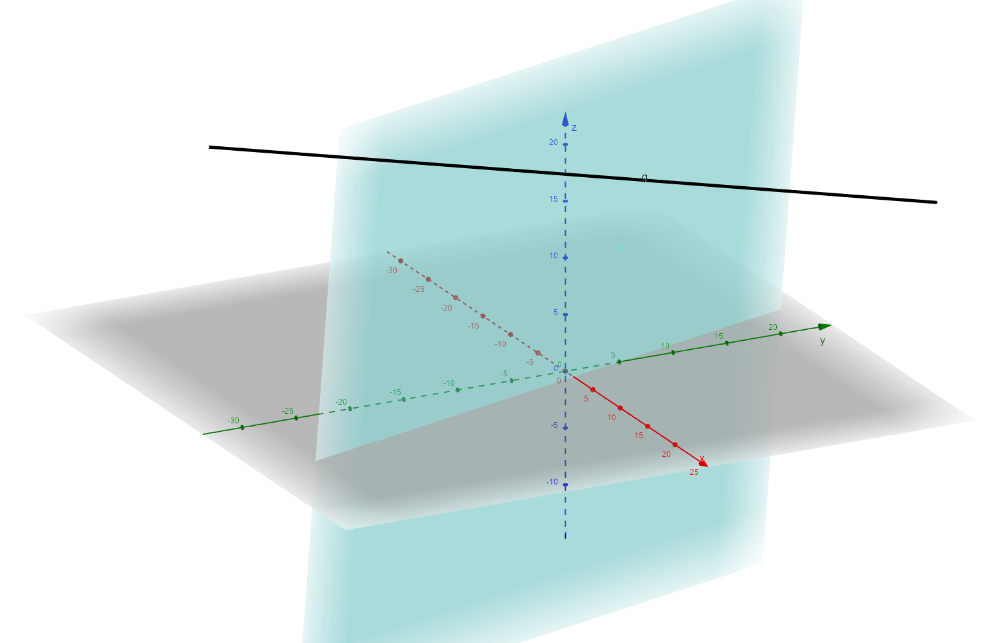
Gerade liegt in einer Ebene
Ebene und Gerade sind parallel
Beispiel:
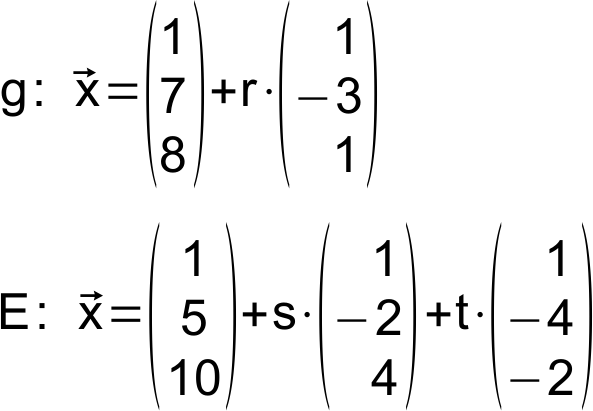
Schnittgleichung bestimmen und umformen:
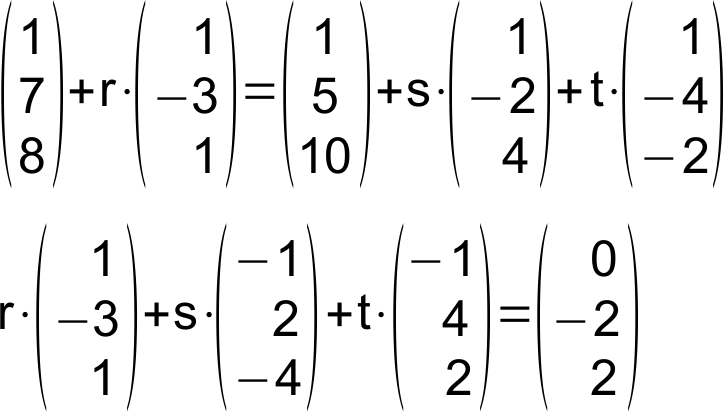
LGS lösen:
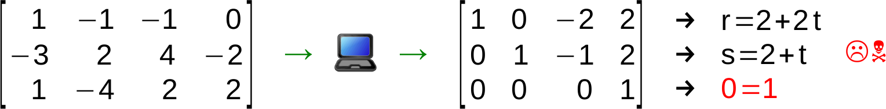
Das LGS hat unendlich keine Lösungen. Das bedeutet, dass kein Punkt auf der Geraden in der Ebene liegt. Gerade und Ebene müssen also parallel sein.
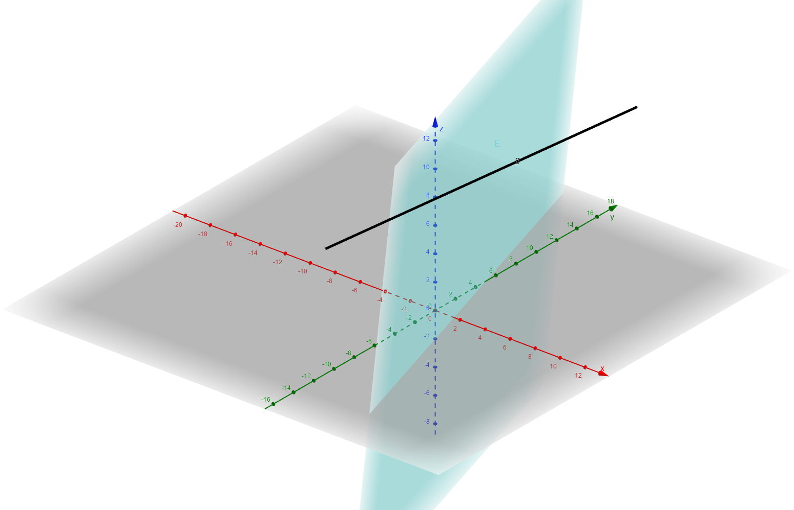
Gerade liegt in einer Ebene